tibble [30 × 6] (S3: tbl_df/tbl/data.frame)
$ Année : num [1:30] 1996 1997 1998 1999 2000 ...
$ Effort : num [1:30] 399 433 402 403 410 425 464 579 546 502 ...
$ Durbec des sapins: num [1:30] 450 4358 728 8336 782 ...
$ Jaseur boréal : num [1:30] 7 615 4686 1609 1804 ...
$ Sizerin flammé : num [1:30] 1396 6602 19439 2314 8838 ...
$ Tarin des pins : num [1:30] 16901 2756 7706 680 18487 ...Suivi migratoire et tendance des populations de fringilidés aux dunes de Tadoussac
en collaboration avec l’Observatoire d’oiseaux de Tadoussac
Maxence Poirier-Joanette, Adrien Badet, Alexandre Ethier, Bérince Hounsouvo
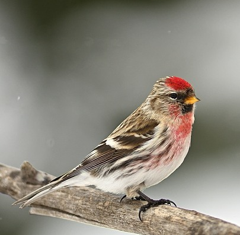
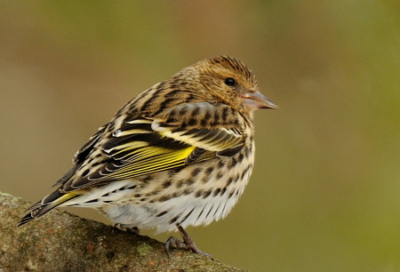
Objectifs
1) Comment évoluent les populations de fringillidés boréaux (4 espèces) dans le temps (1996-2025) ; tendances temporelles sur 30 ans de suivi?
- Est-ce que la proportion de jeunes de l’année (indice de succès reproducteur) évolue dans le temps ?
- Comment évolue la condition corporelle des différentes classes au cours du temps ?
2) Qu’est-ce qui explique les irruptions des différentes espèces de fringillidés?
- Est-ce que la proportion de jeunes de l’année (indice de succès reproducteur) est corrélée avec l’abondance annuelle?
- Est-ce que la condition corporelle est corrélée à l’abondance annuelle ?
Jeux de données brutes
tibble [21,227 × 14] (S3: tbl_df/tbl/data.frame)
$ Préfixe : num [1:21227] 2100 2100 2100 2100 2100 2100 2100 2100 2100 2100 ...
$ Suffixe : chr [1:21227] "05561" "05866" "06040" "06068" ...
$ Espèce : chr [1:21227] "Tarin des pins" "Tarin des pins" "Sizerin flammé" "Sizerin flammé" ...
$ Espèce (abréviation): chr [1:21227] "TAPI" "TAPI" "SIFL" "SIFL" ...
$ Âge : chr [1:21227] "HY" "HY" "Local" "Local" ...
$ Sexe : chr [1:21227] "U" "F" "U" "U" ...
$ Aile : num [1:21227] 69 67 71 74 71 75 72 70 70 71 ...
$ Gras : chr [1:21227] NA NA NA NA ...
$ Queue : num [1:21227] NA NA NA NA NA NA NA NA NA NA ...
$ Masse : num [1:21227] NA 13.4 10.7 11.4 11 11.1 12.5 12.1 13.1 12.4 ...
$ Année : num [1:21227] 1997 1997 1997 1997 1997 ...
$ Date : POSIXct[1:21227], format: "1997-08-18" "1997-08-31" ...
$ Site : chr [1:21227] "Dunes" "Dunes" "Dunes" "Dunes" ...
$ Municipalité : chr [1:21227] "Tadoussac" "Tadoussac" "Tadoussac" "Tadoussac" ...Manipulations et défis de abond
tibble [120 × 4] (S3: tbl_df/tbl/data.frame)
$ Annee : num [1:120] 1996 1996 1996 1996 1997 ...
$ Effort: num [1:120] 399 399 399 399 433 433 433 433 402 402 ...
$ Espece: chr [1:120] "DUSA" "JABO" "SIFL" "TAPI" ...
$ abond : num [1:120] 450 7 1396 16901 4358 ...Manipulations et défis de bague
colnames(bague) <- c("Pre", "Su", "Espèce", "Espece", "Age", "Sexe", "Aile", "Gras", "Queue", "Masse", "Annee", "Date", "Site", "Muni") # Standardiser
bague$Espece <- replace(bague$Espece, bague$Espece %in% "tapi", "TAPI")
# Pooler les âges en deux groupes (HY vs AHY)
bague$Age <- replace(bague$Age, bague$Age %in% c("Local", "S"), "U") #Unknown
bague$Age <- replace(bague$Age, bague$Age %in% "hy", "HY") #Juv (Hatch year)
bague$Age <- replace(bague$Age, bague$Age %in% c("SY", "ASY", "ahy"), "AHY") #Non-juv (After-Hatch Year)
# FILTRE DF
bague <- bague[bague$Age != "U",] # Filter out Âge = U
bague <- bague[bague$Site == "Dunes",] #Sélection des sites de capture aux Dunes de Tadoussac
bague <- bague[, -c(1,2,3,6,8,9,12,13,14)] # Drop colonnes non-nécessaires
bague <- bague[bague$Annee >= "2007",] # Cut tout ce qui est avant 2007
# Espece
bague$Espece <- as.factor(bague$Espece)
# Age
bague$Age <- as.factor(bague$Age)
# Annee
bague$Annee <- as.factor(as.numeric(bague$Annee))
bague$Annee <- as.integer(bague$Annee)
str(bague)tibble [19,267 × 5] (S3: tbl_df/tbl/data.frame)
$ Espece: Factor w/ 4 levels "DUSA","JABO",..: 4 4 4 4 4 4 4 4 4 4 ...
$ Age : Factor w/ 2 levels "AHY","HY": 2 2 2 2 2 2 2 2 2 2 ...
$ Aile : num [1:19267] 70 72 68 70 71 70 67 72 68 73 ...
$ Masse : num [1:19267] 13.3 12.4 12.3 12.5 12.8 12.5 12.4 13.3 12 12.7 ...
$ Annee : int [1:19267] 1 1 1 1 1 1 1 1 1 1 ...Manipulations par espèce
# DUSA
DUSA <- abond %>%
filter(Espece == "DUSA")
bague_DUSA <- bague[bague$Espece == "DUSA",]
# Calcul de l'abondance standardisée
DUSA$abond_std <- round(DUSA$abond/DUSA$Effort, 3) # Nb. d'oiseaux/h
# Calcul proportions HY
bague_DUSA <- bague_DUSA %>%
group_by(Annee) %>%
mutate(nb_HY = sum(Age == "HY"),
nb_AHY = sum(Age == "AHY"),
nb_tot = (nb_HY + nb_AHY),
prop_HY = nb_HY/nb_tot,
condition = Aile/Masse) %>% # Ajout de la condition
ungroup()
# Extraction prop annuelle
DUSA_HY <- unique(bague_DUSA[, c(5,6)]) # On cherche toutes les valeurs uniques pour avoir nb_HY, nb_AHY et nb_tot PAR année
DUSA_HY <- DUSA_HY %>%
complete(Annee = seq(min(Annee), max(Annee), 1)) %>% # Il manque certain rows (année où 0 capture). On les remplace donc par 0
replace(is.na(.), 0)
DUSA_AHY <- unique(bague_DUSA[, c(5,7)])
DUSA_AHY <- DUSA_AHY %>%
complete(Annee = seq(min(Annee), max(Annee), 1)) %>%
replace(is.na(.), 0)
DUSA_nbtot <- unique(bague_DUSA[, c(5,8)])
DUSA_nbtot <- DUSA_nbtot %>%
complete(Annee = seq(min(Annee), max(Annee), 1)) %>%
replace(is.na(.), 0)
# Extraction condition moyenne de l'espèce en fct. de l'année
DUSA_cond <- bague_DUSA %>%
group_by(Annee, Age) %>%
summarise(cond_moy = mean(na.omit(condition))) %>%
ungroup()
DUSA_cond_HY <- DUSA_cond %>%
filter(Age == "HY") %>%
complete(Annee = seq(min(Annee), max(Annee), 1))
DUSA_cond_AHY <- DUSA_cond %>%
filter(Age == "AHY") %>%
complete(Annee = seq(min(Annee), max(Annee), 1))
# Création colonnes vides
DUSA$nb_HY <- NA
DUSA$nb_AHY <- NA
DUSA$nb_tot <- NA
DUSA$cond_moy_HY <- NA
DUSA$cond_moy_AHY <- NA
# Populer avec NA avec vecteurs
DUSA$nb_HY[12:length(DUSA$nb_HY)] <- DUSA_HY$nb_HY
DUSA$nb_AHY[12:length(DUSA$nb_AHY)] <- DUSA_AHY$nb_AHY
DUSA$nb_tot <- round(DUSA$nb_HY + DUSA$nb_AHY, 3)
DUSA$prop_HY <- round(DUSA$nb_HY/DUSA$nb_tot, 3)
DUSA$cond_moy_HY[12:length(DUSA$cond_moy_HY)] <- round(DUSA_cond_HY$cond_moy, 3)
DUSA$cond_moy_AHY[12:length(DUSA$cond_moy_AHY)] <- round(DUSA_cond_AHY$cond_moy, 3)
# Irruption
load("/Users/maxencepoirier-joanette/Rstudio/FOR7046/Fringilids/Data/DUSA.irr.R")
DUSA$irruption <- NA
DUSA$irruption[12:length(DUSA$irruption)] <- DUSA_irr
DUSA$irruption <- ifelse(DUSA$irruption == "TRUE", 1,0) # ifelse statement pour que irruption = TRUE soit 1
DUSA$irruption <- as.factor(as.numeric(DUSA$irruption))tibble [30 × 12] (S3: tbl_df/tbl/data.frame)
$ Annee : num [1:30] 1996 1997 1998 1999 2000 ...
$ Effort : num [1:30] 399 433 402 403 410 425 464 579 546 502 ...
$ Espece : chr [1:30] "DUSA" "DUSA" "DUSA" "DUSA" ...
$ abond : num [1:30] 450 4358 728 8336 782 ...
$ abond_std : num [1:30] 1.13 10.06 1.81 20.68 1.91 ...
$ nb_HY : int [1:30] NA NA NA NA NA NA NA NA NA NA ...
$ nb_AHY : int [1:30] NA NA NA NA NA NA NA NA NA NA ...
$ nb_tot : num [1:30] NA NA NA NA NA NA NA NA NA NA ...
$ cond_moy_HY : num [1:30] NA NA NA NA NA NA NA NA NA NA ...
$ cond_moy_AHY: num [1:30] NA NA NA NA NA NA NA NA NA NA ...
$ prop_HY : num [1:30] NA NA NA NA NA NA NA NA NA NA ...
$ irruption : Factor w/ 2 levels "0","1": NA NA NA NA NA NA NA NA NA NA ...Objectif #1
Comment évoluent les populations de fringillidés boréaux (4 espèces) dans le temps (1996-2025) ; tendances temporelles sur 30 ans de suivi?
- Est-ce que la proportion de jeunes de l’année (indice de succès reproducteur) évolue dans le temps?
- Comment évolue la condition corporelle des différentes classes au cours du temps?
Modèle linéaire suivi d’une randomisation
Jeux de données
# Importe le jeu de données pour chaque espèce
DUSA <- read.csv("/Users/maxencepoirier-joanette/Rstudio/FOR7046/Fringilids/Data/DUSA.csv", header = TRUE)
JABO <- read.csv("/Users/maxencepoirier-joanette/Rstudio/FOR7046/Fringilids/Data/JABO.csv", header = TRUE)
SIFL <- read.csv("/Users/maxencepoirier-joanette/Rstudio/FOR7046/Fringilids/Data/SIFL.csv", header = TRUE)
TAPI <- read.csv("/Users/maxencepoirier-joanette/Rstudio/FOR7046/Fringilids/Data/TAPI.csv", header = TRUE)
DUSA$Annee <- as.factor(as.numeric(DUSA$Annee))
DUSA$Annee <- as.integer(DUSA$Annee)
JABO$Annee <- as.factor(as.numeric(JABO$Annee))
JABO$Annee <- as.integer(JABO$Annee)
SIFL$Annee <- as.factor(as.numeric(SIFL$Annee))
SIFL$Annee <- as.integer(SIFL$Annee)
TAPI$Annee <- as.factor(as.numeric(TAPI$Annee))
TAPI$Annee <- as.integer(TAPI$Annee)
str(DUSA)'data.frame': 30 obs. of 13 variables:
$ X : int 1 2 3 4 5 6 7 8 9 10 ...
$ Annee : int 1 2 3 4 5 6 7 8 9 10 ...
$ Effort : num 399 433 402 403 410 425 464 579 546 502 ...
$ Espece : chr "DUSA" "DUSA" "DUSA" "DUSA" ...
$ abond : int 450 4358 728 8336 782 8193 862 3208 1421 1440 ...
$ abond_std : num 1.13 10.06 1.81 20.68 1.91 ...
$ nb_HY : int NA NA NA NA NA NA NA NA NA NA ...
$ nb_AHY : int NA NA NA NA NA NA NA NA NA NA ...
$ nb_tot : int NA NA NA NA NA NA NA NA NA NA ...
$ cond_moy_HY : num NA NA NA NA NA NA NA NA NA NA ...
$ cond_moy_AHY: num NA NA NA NA NA NA NA NA NA NA ...
$ prop_HY : num NA NA NA NA NA NA NA NA NA NA ...
$ irruption : int 0 0 0 1 0 0 0 0 0 0 ...Code pour la tendance temporelle de l’abondance des Fringillidés
library(ggplot2)
library(cowplot) # Regrouper les graphiques
abond <- read.csv("/Users/maxencepoirier-joanette/Rstudio/FOR7046/Fringilids/Data/abond_clean.csv")
plot_DUSA_tot <- ggplot(abond[abond$Espece=="DUSA",], aes(x = Annee, y = abond_std, group =1))+
geom_point(size = 3, col = "darkorange1")+
geom_path(linewidth = 1, col = "orange")+
labs(title = "Abondance standardisée du Durbec des sapins dans le temps",
x = "Année",
y = expression("N. individus recensés *" ~ heure^{-1}))+
theme_classic()+
theme(axis.text.x = element_text(size = 10, angle = 45, vjust = 0.8),
plot.title = element_text(size = 10))Visualisation de la tendance temporelle de l’abondance des Fringillidés
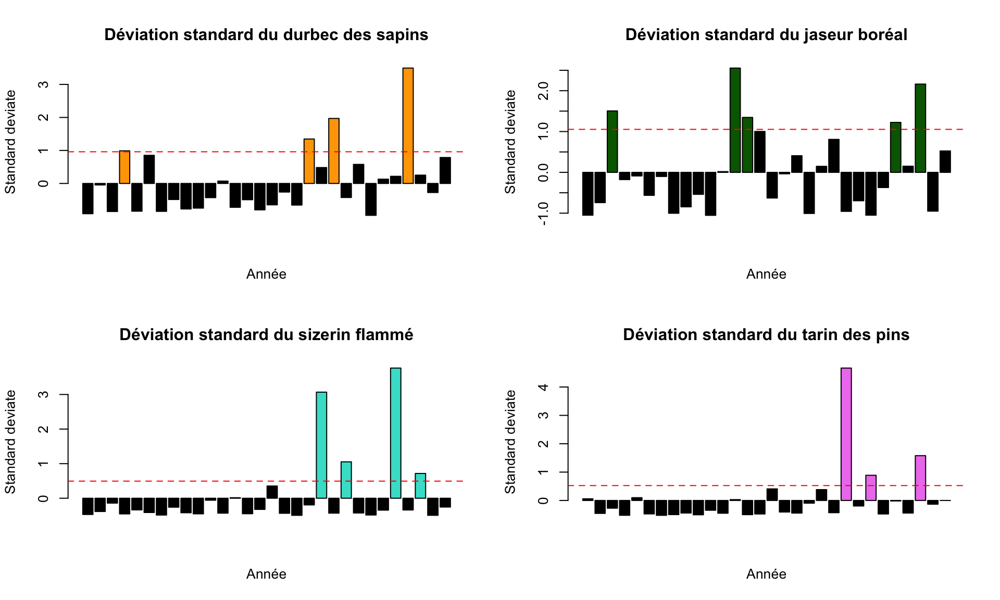
Modèle d’abondance pour DUSA
# Modèle linéaire avec une transformation log
lm_DUSA <- lm(log(abond_std) ~ Annee, data = DUSA)
#DUSA
DUSA_int <- lm_DUSA$coefficients["(Intercept)"]
DUSA_annee <- lm_DUSA$coefficients["Annee"]
DUSA_sd <- coef(summary(lm_DUSA))[, "Std. Error"]
# Extraction des IC
# interceptes
DUSA_upperIC_int <- DUSA_int + (1.96 * DUSA_sd[1])
DUSA_lowerIC_int <- DUSA_int - (1.96 * DUSA_sd[1])
# annee
DUSA_upperIC_annee <- DUSA_annee + (1.96 * DUSA_sd[2])
DUSA_lowerIC_annee <- DUSA_annee - (1.96 * DUSA_sd[2])
Call:
lm(formula = log(abond_std) ~ Annee, data = DUSA)
Residuals:
Min 1Q Median 3Q Max
-2.78929 -0.61760 0.08316 0.60758 1.71733
Coefficients:
Estimate Std. Error t value Pr(>|t|)
(Intercept) 1.11257 0.36472 3.050 0.00496 **
Annee 0.04988 0.02054 2.428 0.02187 *
---
Signif. codes: 0 '***' 0.001 '**' 0.01 '*' 0.05 '.' 0.1 ' ' 1
Residual standard error: 0.974 on 28 degrees of freedom
Multiple R-squared: 0.1739, Adjusted R-squared: 0.1444
F-statistic: 5.894 on 1 and 28 DF, p-value: 0.02187Vérification des suppositions du modèle
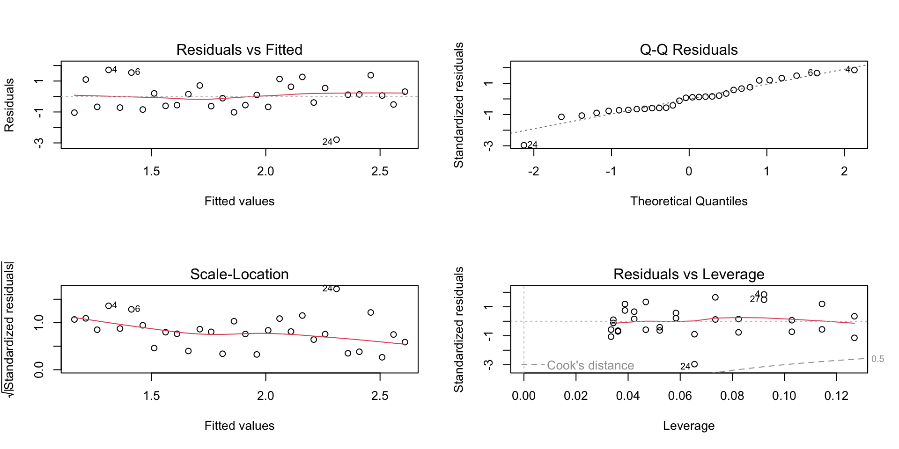
Tableau IC à 95% pour l’abondance
tab_comp <- data.frame(c(DUSA_int, JABO_int, SIFL_int, TAPI_int),
c(DUSA_annee, JABO_annee, SIFL_annee, TAPI_annee),
c(DUSA_lowerIC_annee, JABO_lowerIC_annee, SIFL_lowerIC_annee, TAPI_lowerIC_annee),
c(DUSA_upperIC_annee, JABO_upperIC_annee, SIFL_upperIC_annee, TAPI_upperIC_annee))
rownames(tab_comp) <- c("DUSA", "JABO", "SIFL", "TAPI")
colnames(tab_comp) <- c("Intercepte", "annee", "ic_inf", "ic_sup")
tab_comp Intercepte annee ic_inf ic_sup
DUSA 1.11257005 0.04987798 0.009611137 0.09014482
JABO 0.01182993 0.03644272 -0.053516329 0.12640176
SIFL 2.35295388 0.02556173 -0.056524951 0.10764841
TAPI 1.66825734 0.06722441 0.015480425 0.11896840Code pour les estimés de log beta avec IC 95% pour l’abondance
axex <- 1:4
plot(tab_comp$annee,
xaxt = "n",
ylim = c(-0.2, 0.25),
ylab = "log estimé de beta",
xlab = "Espèces",
main = "Estimés de log beta avec IC 95% : abondance")
abline(h = 0, lty = 2, col = "red")
axis(side = 1, at = axex, labels = c("DUSA", "JABO", "SIFL", "TAPI"))
segments(x0 = 1, y0 = DUSA_lowerIC_annee,
x1 = 1, y1 = DUSA_upperIC_annee)
segments(x0 = 2, y0 = JABO_lowerIC_annee,
x1 = 2, y1 = JABO_upperIC_annee)
segments(x0 = 3, y0 = SIFL_lowerIC_annee,
x1 = 3, y1 = SIFL_upperIC_annee)
segments(x0 = 4, y0 = TAPI_lowerIC_annee,
x1 = 4, y1 = TAPI_upperIC_annee)Figure pour IC à 95% pour les modèles d’abondance
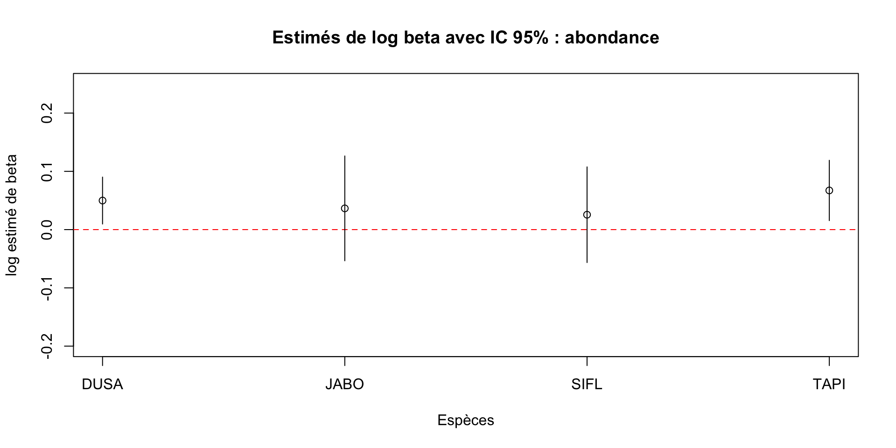
Randomisation pour l’abondance
# Test de randomisation afin d'obtenir des prédictions de lm
# Paramètres randomisation
n_sim <- 5000
DUSA_output <- matrix(data = NA, nrow = n_sim, ncol = 2)
DUSA_sim <- DUSA[, "Annee"]
DUSA_sim <- as.data.frame(DUSA_sim)
DUSA_sim <- rename(DUSA_sim, Annee = "DUSA_sim")
set.seed(0088)
# BOUCLE DE RANDOMISATION
for(i in 1:n_sim){
cat("iter = ", i, "\n")
DUSA_sim$abond_std <- sample(x = DUSA$abond_std, replace = FALSE)
lm_DUSA_rand <- lm(log(abond_std) ~ Annee, data = DUSA_sim)
DUSA_output[i, 1] <- coef(lm_DUSA_rand)[1] # Beta intercepte (abond_std)
DUSA_output[i, 2] <- coef(lm_DUSA_rand)[2] # Beta année
}
DUSA_beta_annee <- sum(DUSA_output[, 2] >= coef(lm_DUSA)[2])/n_simHistogramme de randomisation des modèles d’abondance
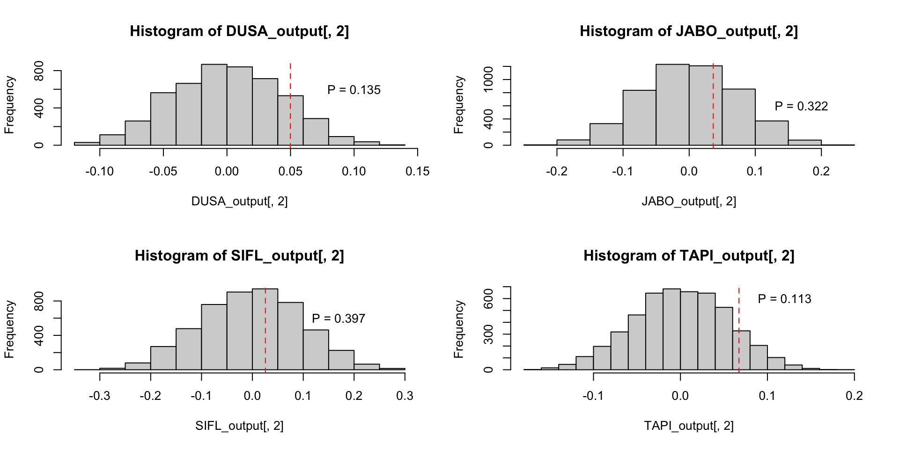
Code pour la tendance temporelle de la proportion de jeunes
library(scales) # objet percent
DUSA_prop<-ggplot(data = DUSA, aes(x = Annee, y = prop_HY)) +
geom_col(fill= "darkorange") +
scale_x_continuous(breaks = seq(2007, 2022, by = 5)) +
xlab("Année") +
ylab("Proportion HY") +
geom_text(aes(label = nb_tot), vjust = -0.5, size = 2)+
labs(fill = "Proportion HY", title = "Proportion de jeunes de Durbec des sapins par année")+
scale_y_continuous(labels = percent)+
theme_classic()+
theme(plot.title = element_text(size = 10))Visualisation de la proportion dans le temps
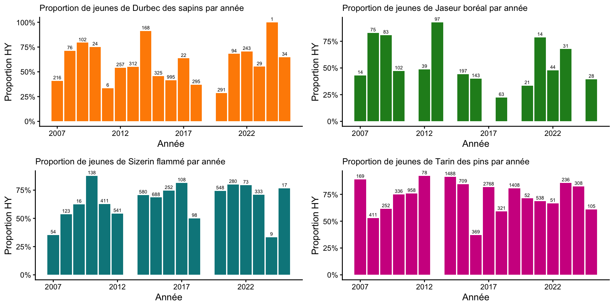
Modèle de proportion pour DUSA
#### DUSA
lm_DUSA_prop <- lm(prop_HY ~Annee, weights = nb_tot, data = DUSA)
# graph coef
DUSA_int_prop <- lm_DUSA_prop$coefficients["(Intercept)"]
DUSA_annee_prop <- lm_DUSA_prop$coefficients["Annee"]
DUSA_sd_prop <- coef(summary(lm_DUSA_prop))[, "Std. Error"]
# Intervalles de confiance
upper_ic_annee_DUSA_prop <- DUSA_annee_prop + (1.96 * DUSA_sd_prop[2])
lower_ic_annee_DUSA_prop <- DUSA_annee_prop - (1.96 * DUSA_sd_prop[2])
summary(lm_DUSA_prop)
Call:
lm(formula = prop_HY ~ Annee, data = DUSA, weights = nb_tot)
Weighted Residuals:
Min 1Q Median 3Q Max
-3.2922 -0.7264 0.6053 1.4123 5.2217
Coefficients:
Estimate Std. Error t value Pr(>|t|)
(Intercept) 10.625738 19.546252 0.544 0.594
Annee -0.005024 0.009698 -0.518 0.612
Residual standard error: 2.305 on 16 degrees of freedom
(1 observation deleted due to missingness)
Multiple R-squared: 0.01649, Adjusted R-squared: -0.04498
F-statistic: 0.2683 on 1 and 16 DF, p-value: 0.6115Vérification des suppositions du modèle
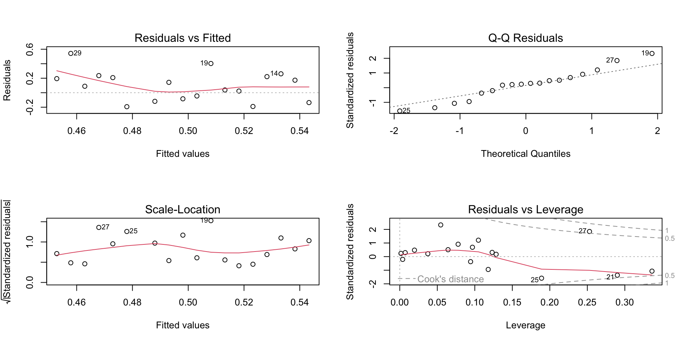
Tableau IC à 95% pour la proportion de jeunes
tab_comp_prop <- data.frame(c(DUSA_int_prop, JABO_int_prop, SIFL_int_prop,TAPI_int_prop),
c(DUSA_annee_prop, JABO_annee_prop, SIFL_annee_prop, TAPI_annee_prop),
c(lower_ic_annee_DUSA_prop, lower_ic_annee_JABO_prop, lower_ic_annee_SIFL_prop, lower_ic_annee_TAPI_prop),
c(upper_ic_annee_DUSA_prop, upper_ic_annee_JABO_prop, upper_ic_annee_SIFL_prop, upper_ic_annee_TAPI_prop))
rownames(tab_comp_prop) <- c("DUSA", "JABO", "SIFL", "TAPI")
colnames(tab_comp_prop) <- c("Intercepte", "annee", "ic_inf", "ic_sup")
tab_comp_prop Intercepte annee ic_inf ic_sup
DUSA 10.625738 -0.005023637 -0.024031881 0.013984607
JABO 43.488605 -0.021317133 -0.044775126 0.002140859
SIFL -23.282668 0.011889776 0.001965187 0.021814365
TAPI -5.055723 0.002894192 -0.011888300 0.017676684Code pour les estimés de log beta avec IC 95% pour la proportion
axex<- 1:4
rownames(tab_comp_prop) <- c("DUSA", "JABO", "SIFL", "TAPI")
colnames(tab_comp_prop) <- c("Intercepte", "annee", "ic_inf", "ic_sup")
tab_comp_prop
plot(tab_comp_prop$annee,
xaxt = "n",
ylim = c(-0.05, 0.03),
ylab = "log estimé de beta",
xlab = "Espèces",
main = "Estimés de log beta avec IC 95% : proportion jeunes par espèce")
abline(h = 0, lty = 2, col = "red")
axis(side = 1, at = axex, labels = c("DUSA", "JABO", "SIFL", "TAPI"))
segments(x0 = 1, y0 = lower_ic_annee_DUSA_prop,
x1 = 1, y1 = upper_ic_annee_DUSA_prop)
segments(x0 = 2, y0 = lower_ic_annee_JABO_prop,
x1 = 2, y1 = upper_ic_annee_JABO_prop)
segments(x0 = 3, y0 = lower_ic_annee_SIFL_prop,
x1 = 3, y1 = upper_ic_annee_SIFL_prop)
segments(x0 = 4, y0 = lower_ic_annee_TAPI_prop,
x1 = 4, y1 = upper_ic_annee_TAPI_prop)Visualisation des estimés de log beta avec IC 95% pour la proportion
Intercepte annee ic_inf ic_sup
DUSA 10.625738 -0.005023637 -0.024031881 0.013984607
JABO 43.488605 -0.021317133 -0.044775126 0.002140859
SIFL -23.282668 0.011889776 0.001965187 0.021814365
TAPI -5.055723 0.002894192 -0.011888300 0.017676684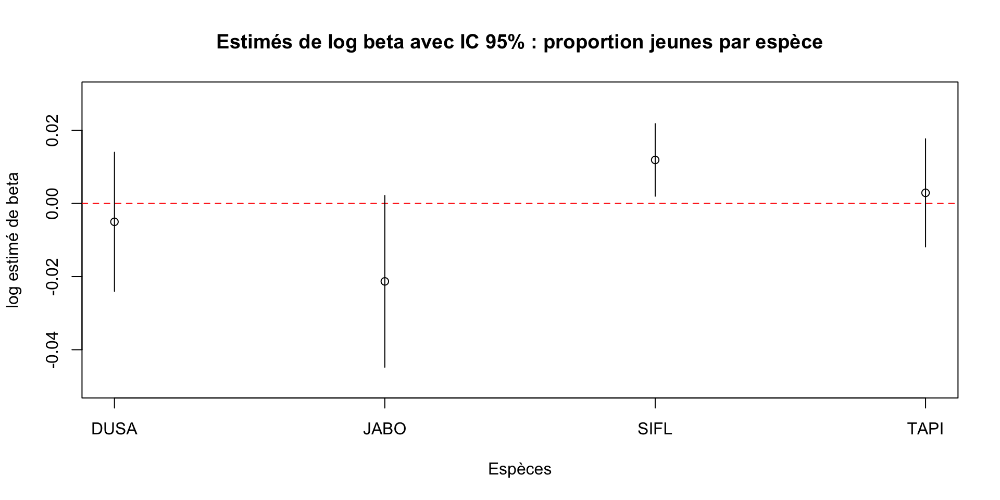
Randomisation pour la proportion
# simulation
DUSA$Annee <- as.numeric(DUSA$Annee)
n_sim <- 5000
DUSA_output_prop <- matrix(data = NA, nrow = n_sim, ncol = 2)
DUSA_sim_prop <- DUSA[, "Annee"]
DUSA_sim_prop <- as.data.frame(DUSA_sim_prop)
DUSA_sim_prop <- rename(DUSA_sim_prop, Annee = "DUSA_sim_prop")
set.seed(1234)
for(i in 1:n_sim){
cat("iter = ", i, "\n")
DUSA_sim_prop$prop <- sample(x = DUSA$prop_HY, replace = FALSE)
lm_DUSA_rand_prop <- lm(prop ~ Annee, data = DUSA_sim_prop)
DUSA_output_prop[i,1] <- coef(lm_DUSA_rand_prop)[1] # Beta intercepte (abond_std)
DUSA_output_prop[i,2] <- coef(lm_DUSA_rand_prop)[2] # Beta année
}
#save(DUSA_output_prop, file = "DUSA_output_prop.R")
#load("DUSA_output_prop.R")
pbeta_annee <- sum(DUSA_output_prop[, 2] <= coef(lm_DUSA_prop)[2])/n_sim # 0.28Histogramme de randomisation des modèles de proportion
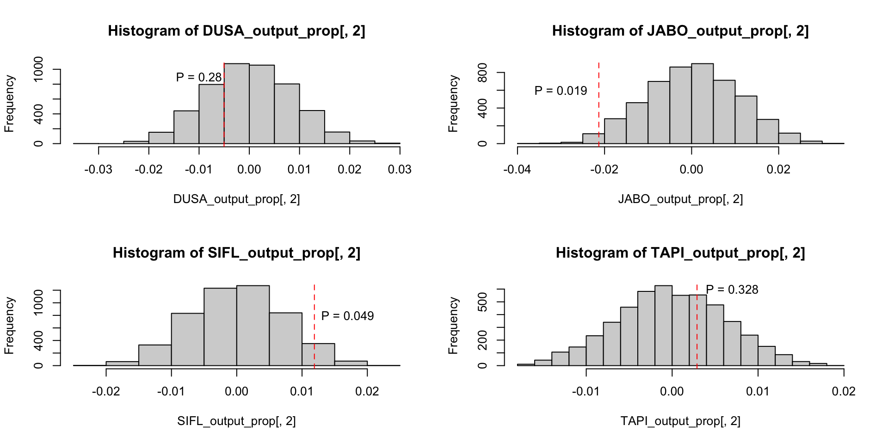
Code pour la tendance temporelle de la condition des Fringillidés
bague <- read.csv("/Users/maxencepoirier-joanette/Rstudio/FOR7046/Fringilids/Data/bague_clean.csv", header = TRUE)
bague$Condition <- bague$Aile/bague$Masse
bague_DUSA <- bague[bague$Espece == "DUSA",] # Ne garde que DUSA
bague_JABO <- bague[bague$Espece == "JABO",] # Ne garde que JABO
bague_SIFL <- bague[bague$Espece == "SIFL",] # Ne garde que SIFL
bague_TAPI <- bague[bague$Espece == "TAPI",] # Ne garde que TAPI
#### DUSA
# condition âge confondu
plot_condition_DUSA <- ggplot(bague_DUSA, aes(x = Annee, y = Condition, group = Annee)) +
geom_boxplot(fill = "darkorange1") +
scale_x_continuous(breaks = seq(1, 20, by = 5), labels = c("2007", "2012", "2017", "2022")) +
labs(title = "Condition du Durbec des sapins selon les années",
x = "Année",
y = "Condition") +
theme(
axis.line.x = element_line(color = "black", linewidth = 0.5),
axis.line.y = element_line(color = "black", linewidth = 0.5),
panel.background = element_blank()
)
# condition par âge
plot_condition_age_DUSA<-ggplot(bague_DUSA, aes(x = Annee, y = Condition, group = interaction(Annee, Age)))+
geom_boxplot(aes(fill = Age))+
scale_fill_manual(
values = c(
"AHY" = "darkorange3",
"HY" = "orange"
))+
scale_x_continuous(breaks = seq(1, 20, by = 5), labels = c("2007", "2012", "2017", "2022")) +
labs(title = "Condition des classes du Durbec des sapins par année",
x = "Année",
y = "Condition") +
theme_classic() Visualisation de la condition dans le temps
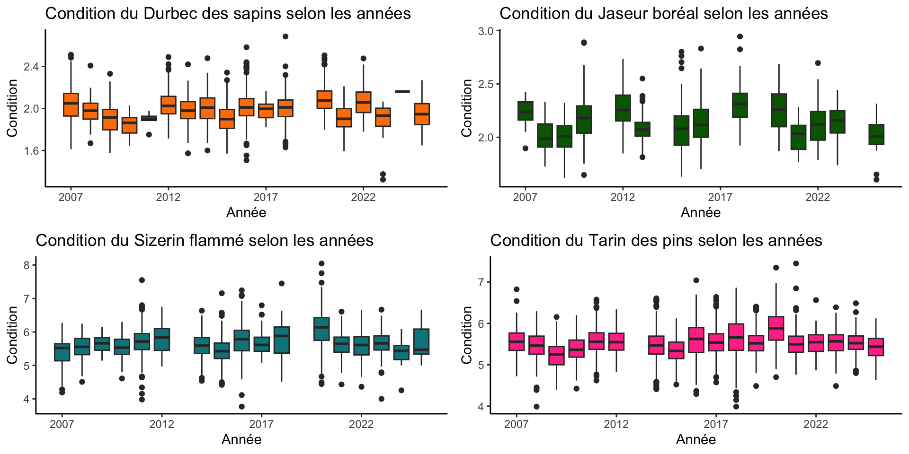
Visualisation de la condition par âge dans le temps
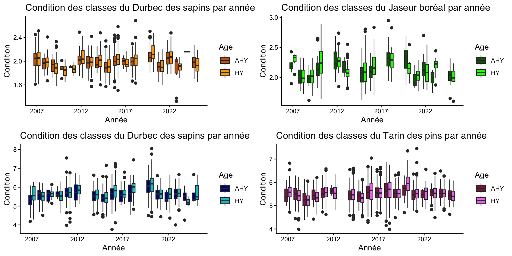
Objectif #1
Comment évoluent les populations de fringillidés boréaux (4 espèces) dans le temps (1996-2025) ; tendances temporelles sur 30 ans de suivi?
L’abondance ne change pas pour aucune espèce à Tadoussac au fil du temps
La proportion de jeunes le Jaseur boréal diminue dans le temps à Tadoussac, mais augmente pour le Tarin des pins
La condition
Objectif #2
Qu’est-ce qui explique les irruptions des différentes espèces de fringillidés?
- Est-ce que la proportion de jeunes de l’année (indice de succès reproducteur) est corrélée avec l’abondance annuelle?
- Est-ce que la condition corporelle est corrélée à l’abondance annuelle ?
Régression bêta-binomiale à l’aide de JAGS
Définir une irruption
Irruption
Une irruption d’oiseaux est un mouvement migratoire irrégulier et massif d’espèces (souvent boréales) vers des régions plus méridionales. L’irruption est imprévisible.
Il faut donc déterminer nos années irruptives de façon objective
Code pour définir une irruption
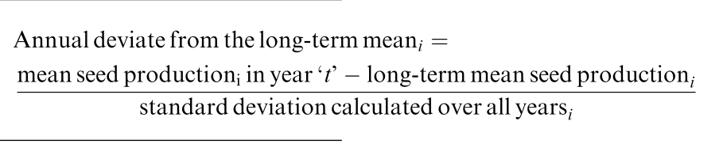
LaMontagne & Boutin 2009
# Extraction param. équation
DUSA_Ni <- DUSA$abond_std
DUSA_P <- mean(DUSA$abond_std)
DUSA_Nipi <- DUSA_Ni - DUSA_P # Numérateur
DUSA_sigma <- sd(DUSA_Nipi) # Sigma
DUSA_Di <- DUSA_Nipi/DUSA_sigma # Standard deviate
DUSA_seuil <- abs(min(DUSA_Di)) # Seuil fixé pour irruption
DUSA_irr <- DUSA_Di > DUSA_seuil # Vecteur logique TRUE or FALSE pour irruptionCode pour visualiser les irruptions
# Représentation graphique pour JABO
JABO_plot <- ggplot(JABO, aes(x = Annee, y = abond_std, color = factor(irruption)))+
scale_color_manual(values = c("1" = "darkgreen", "0" = "black"))+
geom_point(size = 4)+
geom_path(linewidth = 1, col = "#a7a7a7")+
labs(title = "Abondance standardisée annuelle du Jaseur boréal pour les années irruptives VS non-irruptives",
x = "Année",
y = expression("N. individus recensés *" ~ heure^{-1}))+
geom_hline(yintercept = mean(JABO$abond_std), col = "red", lty = 2)+
theme_classic()+
theme(axis.text.x = element_text(size = 10, angle = 45, vjust = 0.8))
JABO_plot
# DEVIATE BARPLOTS pour JABO
range(JABO_Di)
cols <- c("black", "darkgreen")
JABO_col <- ifelse(JABO_Di > 1.053, cols[2],
cols[1])
JABO_Diplot <- barplot(JABO_Di, JABO$Annee,
xlab = "Année",
ylab = "Déviation standard",
col = JABO_col,
main = "Déviation standard du Durbec des sapins")
abline(h = 1.053, col = "red", lty = 2)Visualisation des irruptions
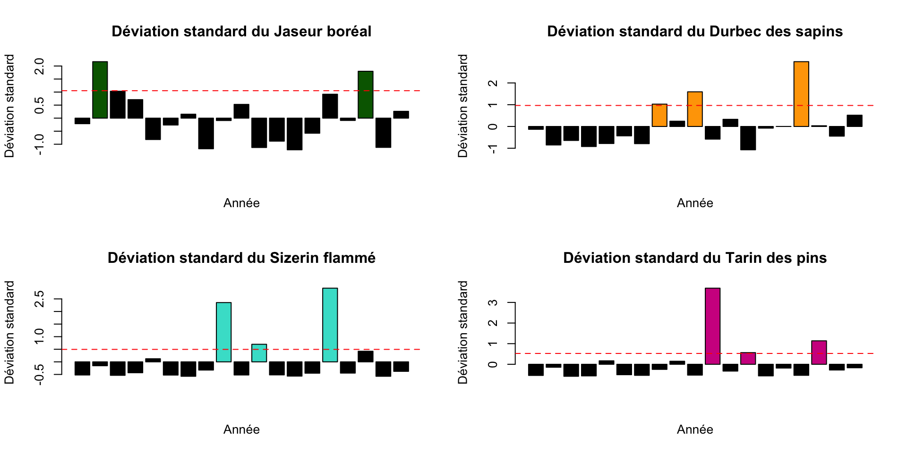
Visualisation des irruptions
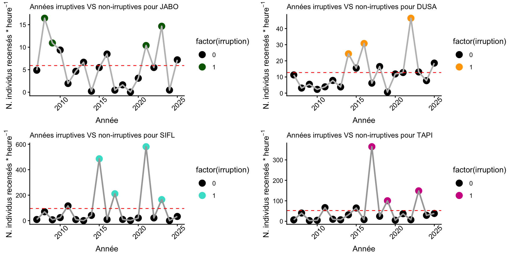
Régression bêta-binomiale JAGS
\(log(\mu_{abondance_i}) = \alpha_{annee} + X_i\beta_{irruption}\)
\(\beta_{irruption} \sim N(0, 0.1)\)
\(\sigma_{irruption} \sim unif(0, 100)\)
\(\alpha_{{annee}} \sim N(\sigma_{annee}, \tau_{annee})\)
\(\sigma_{annee} \sim unif(0, 0.1)\)
\(\tau_{annee} = \frac{1} {\sigma^2_{annee}}\)
Préparation du modèle JAGS
library(jagsUI)
mod_HY_DUSA <- "
model{
# prior alpha
for (i in 1: n.annee){
alpha.annee[i] ~ dnorm(mu.annee, tau.annee)
}
mu.annee ~ dnorm (0,0.001)
sigma.annee ~ dunif(0,100)
tau.annee <- 1/(sigma.annee * sigma.annee)
# prior probabilité beta
beta.irru ~ dnorm(0, 0.1)
sigma ~ dunif(0,100)
tau <- 1/(sigma * sigma)
# theta
theta ~ dunif(0.0, 20)
# likelihood
for(i in 1:nobs) {
logit(mu[i]) <- max(-10, min(10, alpha.annee[Annee[i]] + beta.irru * irruption[i]))
# Probabilité tiré d'une distribution beta binomiale
prob[i] ~ dbeta(mu[i] * theta, (1 - mu[i]) * theta) T(0.001, 0.999)
# Data observé tiré de la distribution
PropJeunes[i] ~ dbin(prob[i], nb_tot[i])
}
mean.int <- mean(alpha.annee[])
mean.prob <- mean(prob[])
}
"
writeLines(mod_HY_DUSA, con = "mod_HY_DUSA.txt")
# Paramètres
n.annee <- length(unique(DUSA$Annee))
nobs <- nrow(DUSA)
DUSA_jagsData <- list(
irruption = DUSA$irruption,
nobs = nobs,
n.annee = n.annee,
Annee = DUSA$Annee,
nb_tot = as.integer(DUSA$nb_tot),
PropJeunes = as.integer(round(DUSA$prop_HY * DUSA$nb_tot))
)
# Données initiales
initsFun <- function(){
list(beta.irru = rnorm(1),
alpha.annee = rnorm(n.annee),
theta = runif(1, 0.01, 10))
}
params <- c("beta.irru","mean.int","mean.prob", "alpha.annee", "sigma.annee", "sigma", "mu", "theta", "prob")
#DUSA_out_jags<- jags(data = DUSA_jagsData,
# inits = initsFun,
# parameters.to.save = params,
# n.chains = 5,
# n.iter = 50000,
# n.burnin = 10000,
# n.thin = 10,
# model= "mod_HY_DUSA.txt")
# save(DUSA_out_jags, file = "DUSA_out_jags.txt")
load("/Users/maxencepoirier-joanette/Rstudio/FOR7046/Fringilids/Data/DUSA_out_jags.txt")Rhat et erreur MC
Code des diagrammes de convergence
# Diagramme de convergence
par(mfrow = c(4,1), mar= c(4,4,2,2))
matplot(cbind(DUSA_out_jags$samples[[1]][, "mean.int"],
DUSA_out_jags$samples[[2]][, "mean.int"],
DUSA_out_jags$samples[[3]][, "mean.int"],
DUSA_out_jags$samples[[4]][, "mean.int"],
DUSA_out_jags$samples[[5]][, "mean.int"]),
type = "l",
ylab = "mean.int", cex.lab = 1.2)
matplot(cbind(DUSA_out_jags$samples[[1]][, "beta.irru"],
DUSA_out_jags$samples[[2]][, "beta.irru"],
DUSA_out_jags$samples[[3]][, "beta.irru"],
DUSA_out_jags$samples[[4]][, "beta.irru"],
DUSA_out_jags$samples[[5]][, "beta.irru"]),
type = "l",
ylab = "beta irruption", cex.lab = 1.2)
matplot(cbind(DUSA_out_jags$samples[[1]][, "sigma.annee"],
DUSA_out_jags$samples[[2]][, "sigma.annee"],
DUSA_out_jags$samples[[3]][, "sigma.annee"],
DUSA_out_jags$samples[[4]][, "sigma.annee"],
DUSA_out_jags$samples[[5]][, "sigma.annee"]
),
type = "l",
ylab = "beta sigma année", cex.lab = 1.2)
matplot(cbind(DUSA_out_jags$samples[[1]][, "theta"],
DUSA_out_jags$samples[[2]][, "theta"],
DUSA_out_jags$samples[[3]][, "theta"],
DUSA_out_jags$samples[[4]][, "theta"],
DUSA_out_jags$samples[[5]][, "theta"]),
type = "l",
ylab = "theta", cex.lab = 1.2)Diagrammes de convergence
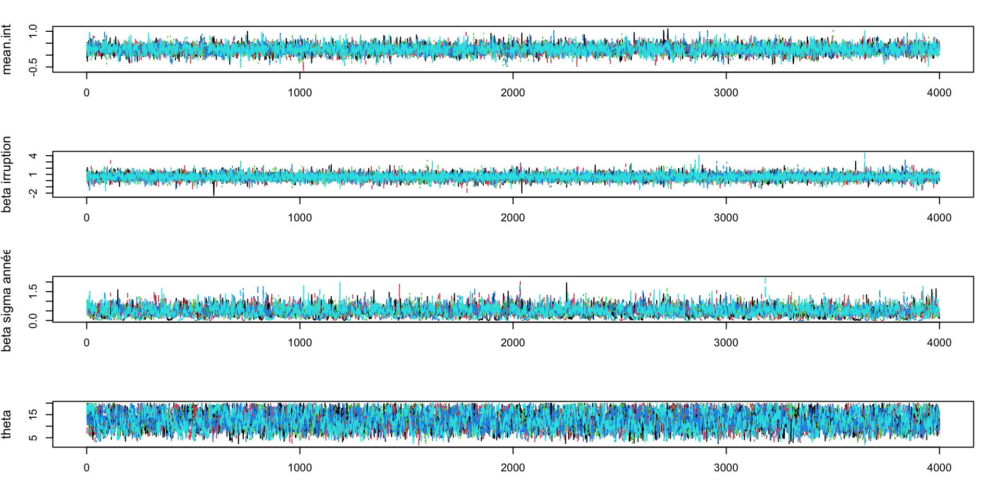
Code des diagrammes d’autocorrélation
# Diagrammes d'autocorrélation
library(coda)
par(mfrow=c(2,3), mar=c(4,4,2,2))
autocorr.plot(DUSA_outMC[[1]][, "mean.int"],
auto.layout = FALSE, main= "mean.int - autocorr.plot")
autocorr.plot(DUSA_outMC[[1]][, "beta.irru"],
auto.layout = FALSE, main= "beta.irru - autocorr.plot")
autocorr.plot(DUSA_outMC[[1]][, "theta"],
auto.layout = FALSE, main = "theta - autocorr.plot")
autocorr.plot(DUSA_outMC[[1]][, "sigma"],
auto.layout = FALSE, main = "sigma - autocorr.plot")
autocorr.plot(DUSA_outMC[[1]][, "sigma.annee"],
auto.layout = FALSE, main= "sigma.annee - autocorr.plot")Diagrammes d’autocorrélation
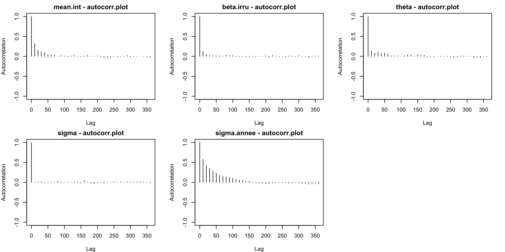
Code des distributions postérieures
par(mfrow=c(2,3), mar=c(4,4,2,2))
plot(density(DUSA_out_jags$sims.list$mean.int),
xlab = "mean.int",
main = "Postérieur de mean.int")
plot(density(DUSA_out_jags$sims.list$beta.irru),
xlab = "Irruption",
main = "Postérieur de beta irruption")
plot(density(DUSA_out_jags$sims.list$sigma),
xlab = "sigma",
main = "Postérieur de sigma")
plot(density(DUSA_out_jags$sims.list$sigma.annee ),
xlab = "sigma année",
main = "Postérieur de sigma année") # parait être différent de 0
plot(density(DUSA_out_jags$sims.list$theta),
xlab = "theta",
main = "Postérieur de Theta")Distributions postérieures
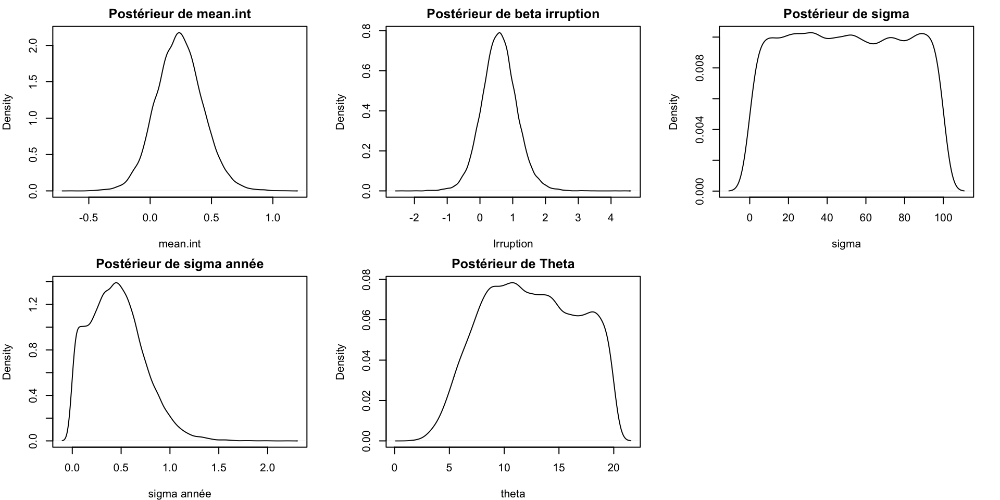
Output du modèle JAGS
mean sd 2.5% 97.5% Rhat
mean.int 0.2385812 0.19010377 -0.12738581 0.6221632 1.0001669
beta.irru 0.5897806 0.53385831 -0.44492665 1.6699246 0.9999872
sigma.annee 0.4511464 0.27688647 0.02138258 1.0487280 1.0005071
theta 12.4561371 4.18615346 5.02385431 19.5694231 1.0007098
mean.prob 0.5749397 0.02033193 0.53520002 0.6151381 1.0000170Extraction des coefficients du JAGS
# Output des JAGS de chaque espèce
load("/Users/maxencepoirier-joanette/Rstudio/FOR7046/Fringilids/Data/DUSA_out_jags.txt")
load("/Users/maxencepoirier-joanette/Rstudio/FOR7046/Fringilids/Data/JABO_out_jags.txt")
load("/Users/maxencepoirier-joanette/Rstudio/FOR7046/Fringilids/Data/TAPI_out_jags.txt")
load("/Users/maxencepoirier-joanette/Rstudio/FOR7046/Fringilids/Data/SIFL_out_jags.txt")
# Extrait les IC de l'effet des irruptions
DUSA_summary_mean <- DUSA_out_jags$summary["beta.irru", "mean"]
DUSA_summary_2.5 <- DUSA_out_jags$summary["beta.irru", "2.5%"]
DUSA_summary_97.5 <- DUSA_out_jags$summary["beta.irru", "97.5%"]
JABO_summary_mean <- JABO_out_jags$summary["beta.irru", "mean"]
JABO_summary_2.5 <- JABO_out_jags$summary["beta.irru", "2.5%"]
JABO_summary_97.5 <- JABO_out_jags$summary["beta.irru", "97.5%"]
SIFL_summary_mean <- SIFL_out_jags$summary["beta.irru", "mean"]
SIFL_summary_2.5 <- SIFL_out_jags$summary["beta.irru", "2.5%"]
SIFL_summary_97.5 <- SIFL_out_jags$summary["beta.irru", "97.5%"]
TAPI_summary_mean <- TAPI_out_jags$summary["beta.irru", "mean"]
TAPI_summary_2.5 <- TAPI_out_jags$summary["beta.irru", "2.5%"]
TAPI_summary_97.5 <- TAPI_out_jags$summary["beta.irru", "97.5%"]
# On extrait les infos des summary
#On compile les IC dans un tableau pour comparer
tab_comp_JAGS <- data.frame(
Espece = c("DUSA", "JABO", "SIFL", "TAPI"),
ic_inf = c(DUSA_summary_2.5, JABO_summary_2.5, TAPI_summary_2.5, SIFL_summary_2.5),
ic_sup = c(DUSA_summary_97.5, JABO_summary_97.5, TAPI_summary_97.5, SIFL_summary_97.5),
mean = c(DUSA_summary_mean, JABO_summary_mean, SIFL_summary_mean, TAPI_summary_mean)
)Code pour visualiser l’effet des irruptions par espèce
axex <- 1:4
plot(axex, tab_comp_JAGS$mean,
xaxt = "n",
ylim = range(c(tab_comp_JAGS$ic_inf, tab_comp_JAGS$ic_sup)),
ylab = "Effet de l'irruption (beta)",
xlab = "Espèces",
pch = 16,
main = "Effet des irruptions (IC 95%)")
axis(1, at = axex, labels = tab_comp_JAGS$Espece)
abline(h = 0, lty = 2, col = "red")
segments(x0 = axex, y0 = tab_comp_JAGS$ic_inf,
x1 = axex, y1 = tab_comp_JAGS$ic_sup)Effets des irruptions par espèce sur la proporon
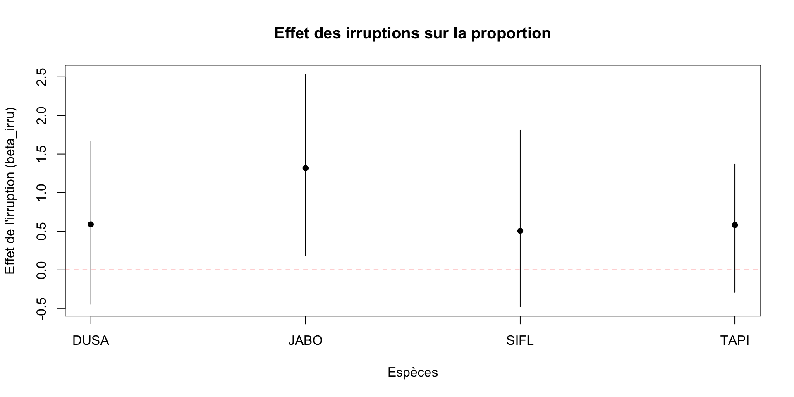
Code pour comparer les années irruptives vs non-irruptives
#Importe le jeu de données
load("/Users/maxencepoirier-joanette/Rstudio/FOR7046/Fringilids/Data/DUSA_bague.csv")
load("/Users/maxencepoirier-joanette/Rstudio/FOR7046/Fringilids/Data/JABO_bague.csv")
load("/Users/maxencepoirier-joanette/Rstudio/FOR7046/Fringilids/Data/SIFL_bague.csv")
load("/Users/maxencepoirier-joanette/Rstudio/FOR7046/Fringilids/Data/TAPI_bague.csv")
par(mfrow= c(2,2))
boxplot(DUSA_bague$condition[DUSA_bague$DUSA_IRR=="0"],
DUSA_bague$condition[DUSA_bague$DUSA_IRR=="1"],
col = c("grey","orange"),
ylab= "Condition",
main= "Condition du durbec des sapins selon les années irruptives",
names = c("Non irruption", "Irruption"))
boxplot(JABO_bague$condition[JABO_bague$JABO_IRR=="0"],
JABO_bague$condition[JABO_bague$JABO_IRR=="1"],
col = c("grey","forestgreen"),
ylab= "Condition",
main= "Condition du jaseur boréal selon les années irruptives",
names = c("Non irruption", "Irruption"))
boxplot(SIFL_bague$condition[SIFL_bague$SIFL_IRR=="0"],
SIFL_bague$condition[SIFL_bague$SIFL_IRR=="1"],
col = c("grey","turquoise3"),
ylab= "Condition",
main= "Condition du sizerin flammé selon les années irruptives",
names = c("Non irruption", "Irruption"))
boxplot(TAPI_bague$condition[TAPI_bague$TAPI_IRR=="0"],
TAPI_bague$condition[TAPI_bague$TAPI_IRR=="1"],
col = c("grey","violetred"),
ylab= "Condition",
main= "Condition du tarin des pins selon les années irruptives",
names = c("Non irruption", "Irruption"))Visualisation
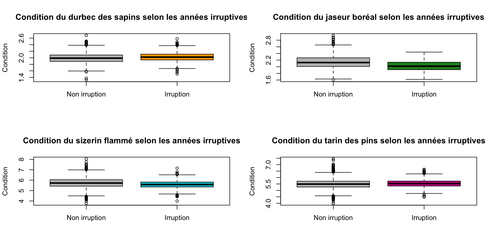
Objectif #2
Qu’est-ce qui explique les irruptions des différentes espèces de fringillidés ?
Pour le JABO, la proportion de jeunes augmente lors d’années irruptives
Pour la condition, c’est très peu concluant . . .
Discussion
Merci